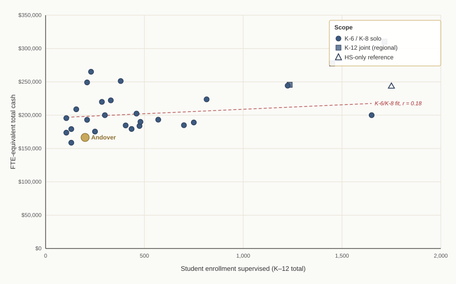

Andover, CT · Dr. Valerie Bruneau and her Connecticut peers · FY 2025–26
A personal report by Scott Sauyet · scott@sauyet.com · Not an official town document
Data covers essentially every Connecticut public school district that operates only elementary grades (PK/K through 6 or 8) — 45 districts, minus Norwich as structurally unlike. Contracts were assembled from town and school-district websites, OCR of scanned PDFs, and direct §10-244c records requests to town clerks where public postings did not surface a current contract. Of the 44 working-set peer districts, contract data is in hand for 40 districts across 30 unique peer superintendent contracts, plus four reference contracts (Amity Region 5, Northwestern Region 7, Chaplin/Region 11, and Union) included on the contracts subpage but not ranked. For the remaining 4 peer districts a thorough search of public sites and clerk outreach has not yet produced a current contract. All figures are “cash compensation” — the salary line plus any board-paid 403(b) annuity, longevity bonus, fixed transportation allowance, and other lump sums. Health insurance value, life insurance face amount, long-term disability, sick-day buyback, and IRS-rate mileage reimbursements are excluded. Because Connecticut superintendent contracts vary widely in work effort — from 12-hour-per-week part-time positions to full-time K-12 regional superintendents — all dollar figures are normalized to a hypothetical 1.0-FTE-equivalent (260-day work year) for apples-to-apples comparison. Andover’s portion of Dr. Bruneau’s compensation is reported separately so readers can see both what Andover pays and what her market-rate compensation works out to.
Introduction
Andover pays its superintendent among the very lowest per-FTE rates of any K-6/K-8-only elementary superintendent in the state. In the strict K-6/K-8 comparison — 2024-25 and 2025-26 contract vintages only, 24 peers — Andover is 23rd of 24, at $166,667 against a peer median of $193,157 (roughly 16% above Andover). The only peer below is Eastford, a 130-student district whose superintendent works 104 days per year (0.40 FTE), at a derived FY 2025-26 rate of $158,695 — about 5% below Andover. The broader view (which also admits 2026-27 vintage-fallback entries) tells the same story: Andover 29th of 30, Eastford last. Every other current K-6/K-8 peer contract pays substantially more, and so do all the districts with more complex shared-administration arrangements. A caveat: we are still attempting to collect current-vintage information on five additional peer districts. Those could conceivably add another data point at or below Andover’s rate, but the general picture — Andover at the very bottom of the peer distribution — is unlikely to change materially.
Dr. Valerie Bruneau is Andover’s Superintendent of Schools, and also Scotland’s, under a separate Scotland contract. She works 0.6 FTE for Andover; her separate Scotland contract engages her at 0.4 FTE — each fraction stated explicitly in its own contract. Andover’s contract pays her $90,000 cash plus a $10,000 mandatory 403(b) deferral for the 2025–26 school year, an Andover-paid total of $100,000. Scaling that 0.6-FTE pay to a full-time rate produces the implied 1.0-FTE-equivalent rate of $166,667 that the finding above rests on.
The comparison spans every other Connecticut superintendent contract we could locate for the 45 small towns identified as peers — towns of similar size, similar grade-level structure, and similar regional profile. Contracts came from public town-clerk pages, school-district CMS crawls, direct §10-244c records requests to town clerks, and a handful of user-supplied PDFs. Of 44 working-set peer towns (Norwich excluded as structurally unlike), we have contract data on 39. The report presents two different cuts of that data with different inclusion rules; Andover sits at the very bottom of both.
One pattern from the analysis is worth flagging up front: within the K-6/K-8 cohort, FTE-equivalent pay is essentially uncorrelated with district enrollment (Pearson r ≈ 0.17 across 25 K-6/K-8 solo contracts). Small Connecticut elementary districts pay their superintendents in a fairly narrow band roughly independent of whether the district has 100 students or 1,200 — the going rate is a market price for the role, not a per-student rate. Andover’s below-band position therefore isn’t explained by the district being smaller than its peers.
Methodology
Two methodological choices shape every table that follows. Both deserve a line of explanation before the numbers appear.
FTE-equivalent, not raw salary. Andover is a small K-6 district whose part-time superintendent is also a part-time superintendent under a separate contract with Scotland. Other towns in the peer set are small enough that they share superintendents outright — Region 4 (Chester, Deep River, Essex/Centerbrook) has one K-12 superintendent across four boards; ER9 (Easton, Redding, Region 9) has one across three. Comparing Andover’s $100,000 Andover-paid amount to Region 4’s per-town share isn’t apples-to-apples because Andover is paying for a 0.6-FTE position while Region 4 districts are each paying for 25% of a different person’s time. The FTE-equivalent normalization expresses each contract as “what would this superintendent earn if working a full 260-day work year at this district’s pay rate.” It is the metric that makes contracts comparable across different staffing arrangements.
By contract, not by district. When three boards sign one joint contract (McKinnon for ER9; White for Region 4), it is one observation, not three. The tables in this report dedupe by contract for joint cases (one row for McKinnon, listing Easton/Redding; one for White, listing Centerbrook/Chester/Deep River). Where the same person serves two districts under separate contracts, each contract is counted as its own observation. Bruneau’s Andover and Scotland contracts are the canonical example: she appears under Andover (2025-26 contract) and again under Scotland (2021-22, the latest Scotland contract located).
Andover's contract
The current Andover contract runs from July 1, 2023 through June 30, 2026. Section 2 explicitly defines the role as a 0.60 FTE position. Section 4 defines “annual base salary” as the sum of (a) a cash component paid biweekly and (b) a $10,000 mandatory deferral into a 403(b) annuity. The three contract-year figures are:
| Contract year | Cash component | 403(b) deferral | Andover-paid total |
|---|---|---|---|
| 2023–24 | $80,000 | $10,000 | $90,000 |
| 2024–25 | $85,000 | $10,000 | $95,000 |
| 2025–26 | $90,000 | $10,000 | $100,000 |
Notes: Source: Andover Superintendent Contract 2023-2026, Section 4 (BASE SALARY). The 403(b) amount is technically a “salary reduction agreement” — the Superintendent elects to defer $10,000 of her base salary into a tax-sheltered annuity — but it is part of the total compensation the Board is obligated to provide, and the Board reports the full $90K+$10K total to the Connecticut State Teachers’ Retirement System.
What “$166,667” includes. The comparison tables in Part 3 sum, for every contract, the same cash items: the salary cash component plus the board-paid or board-provided 403(b) annuity plus any longevity bonus plus any fixed transportation allowance. For Bruneau in 2025–26 that is $90,000 cash + $10,000 annuity = $100,000 — both lines included, not just the salary cash. Divided by Andover’s 0.6 FTE gives the 1.0-FTE-equivalent rate of $166,667 used in every comparison below. Health insurance value, life insurance face amount, long-term disability, sick-day buyback, and IRS-rate mileage reimbursements are not included for any contract — see the Methodology italic at the top of the report. The treatment is uniform: if a peer contract has its own annuity, it is added in the same way.
The 2026–2029 successor contract — referenced in the FY26/FY27 town budget approved February 11, 2026 — proposes a $100,000 cash component for FY 2026–27, plus a $15,000 annuity (up from $10,000). Part 4 returns to that figure and shows where it would land in the current peer distribution.
Peer cohort
The original peer list contained 45 small Connecticut towns selected for similarity to Andover (small enrollment, small budget, K-6 or K-8 elementary structure, sometimes regional secondary). After excluding Norwich (which is structurally very different — much larger, much more urban), the working comparison set is 44 districts.
Of those 44, contract data is in hand for 32 unique superintendent contracts covering 40 peer districts. 30 of those contracts are ranked in the tables below; four are treated as reference observations because the K-6/K-8 comparison isn’t clean for them, and they appear on the contracts subpage but aren’t ranked:
Only 4 peer districts remain pending: Woodbridge (K-6 supe being recruited), plus three very small EASTCONN-region districts where part-time superintendent arrangements are common but the supe’s name and tenure are not always established with certainty (Ashford, North Franklin, Pomfret Center).
CGS § 10-244c (Public Act 17-2) directs town clerks to post superintendent contracts on the town website, but compliance is uneven. Requesting a copy from the town clerk — including via the state’s Freedom of Information process — has turned out to be highly effective; almost every contract in the dataset that wasn’t publicly posted was obtained through a polite records request to the town clerk.
The full list of pending districts appears in Sources at the end.
A note on the Chaplin/Region 11 reference contract. The Chaplin shared-office arrangement is documented in a supporting research memo sourced to the Central Office Committee (COC) Budget 25-27. The COC budget confirms the FY 2025-26 superintendent salary line is $141,750 and that the Chaplin/RD 11 allocation for the Superintendent’s Office is 40/60 — meaning Chaplin bears $56,700 of that salary. Skarzynski also holds a separate 0.3-FTE Hampton contract. Under the reasonable assumption that no superintendent’s contracted workload exceeds 1.0 FTE in total, Chaplin/RD 11 accounts for at most 0.7 FTE of Skarzynski’s time, and Chaplin’s 40% finance share of that maps to at most 0.28 FTE. Chaplin’s implied K-6 FTE-equivalent rate is therefore at least $202,500 — comfortably in the K-6/K-8 band and above Andover’s $166,667. Not precise enough to rank cleanly against solo K-6 contracts, but not a case where Chaplin pays below Andover either. The supporting memo carries the full set of qualifications for a reader who wants to walk the underlying assumptions.
A note on the Union reference contract. Union — the smallest school district in Connecticut (~45 students, one schoolhouse) — was resolved by a records request to the town clerk, but with a twist: Union combines the superintendent and elementary-principal roles in one person under paired contracts. For 2025-26 the superintendent role is a $10,701 addendum (exactly one-twelfth of the $128,419 principal salary) with no stated hours split, so there is no contract-stated superintendent salary or FTE to rank. A supporting research memo reconstructs an FTE-equivalent rate by splitting the combined pay using the market ratio of superintendent to elementary-principal pay in Union’s enrollment class (1.44, per the 2025-26 AASA salary study): roughly $210,000–$230,000 FTE-equivalent, depending on how the contract’s cash-in-lieu-of-insurance stipend and 10% board TSA contribution are counted, with an implied superintendent time share of about 5.5% — roughly 11–12 days a year. A peer-median benchmark and the ratio method agree on the time split within about a percentage point. The construct is consistent with the peer cohort’s rates, but because it is a modeled figure rather than contract-stated dollars, Union is treated as reference-only rather than ranked.
Comparison
The underlying data supports two views, each with a different inclusion rule. Both use the same vintage-fallback policy — 2025-26 data where we have it, 2024-25 if we don’t, 2026-27 if that’s all we have. Older “stale” data is excluded from these tables but the underlying PDFs remain available in the contracts subpage and in the spreadsheet for inspection.
The most inclusive ranked view. Includes every ranked contract whose data passes the vintage-fallback rule, regardless of grade-level scope. One contract — Byars Amity Region 5 — appears as an HS-only reference; two — Lisbon (Keating) and Sterling (Friend) — have their own contract-shape oddities flagged in the table notes.
Andover ranks 29th of 30 — second-lowest, just above Eastford. Mean: $210,321. Median: $198,850.
| Rank | Superintendent | Year | District(s) | FTE-equiv |
|---|---|---|---|---|
| 1 | Dr. Jason McKinnon | 2025–26 | Easton, Redding | $310,408 |
| 2 | Brian J. White | 2025–26 | Centerbrook, Chester, Deep River | $277,649 |
| 3 | Erika F. Sacharko | 2025–26 | Barkhamsted | $265,141 |
| 4 | Sally A. Keating § | 2026–27 | Lisbon | $251,210 |
| 5 | Dr. Patricia Cosentino | 2025–26 | Sherman | $249,163 |
| 6 | Melony M. Brady-Shanley | 2025–26 | Falls Village, Kent, Lakeville, North Canaan, Sharon, West Cornwall | $245,610 |
| 7 | Dr. Vincent (Vince) Scarpetti | 2025–26 | Orange | $244,337 |
| 8 | Dr. Jennifer Byars † | 2025–26 | Amity Region 5 (Bethany/Orange/Woodbridge) | $243,762 |
| 9 | Dr. Thomas Baird | 2025–26 | Hebron | $223,736 |
| 10 | Dr. Holly B. Hageman | 2025–26 | Marlborough | $222,222 |
| 11 | Theodore F. Friend § | 2026–27 | Sterling | $219,860 |
| 12 | Immacolata Canelli | 2024–25 | East Hartland | $208,880 |
| 13 | Barbara Wilson | 2025–26 | Columbia | $202,400 |
| 14 | Scott Feder | 2025–26 | Voluntown | $200,000 |
| 15 | Dr. Candace Morell | 2025–26 | Storrs (Mansfield) | $200,000 |
| 16 | Brian Hendrickson | 2025–26 | Salem | $197,699 |
| 17 | Robert Gilbert | 2025–26 | Colebrook | $195,620 |
| 18 | Jeffrey F. Sousa | 2025–26 | New Hartford | $193,250 |
| 19 | Dr. Jack Zamary | 2025–26 | Bozrah | $193,063 |
| 20 | Christopher Roche | 2025–26 | Woodstock | $190,000 |
| 21 | Dr. Julie Luby | 2025–26 | Winsted | $189,100 |
| 22 | Michele Raynor | 2025–26 | Brooklyn | $185,000 |
| 23 | Kai Byrd | 2024–25 | Bethany | $184,642 |
| 24 | Dr. Christopher Bitgood | 2025–26 | Canterbury | $183,801 |
| 25 | Dr. Roy Seitsinger | 2025–26 | Preston | $179,307 |
| 26 | Andrew Skarzynski (Hampton) | 2025–26 | Hampton | $179,167 |
| 27 | William Hull | 2025–26 | Baltic (Sprague) | $175,443 |
| 28 | Mary Beth Iacobelli | 2024–25 | Norfolk | $173,750 |
| 29 | Valerie Bruneau | 2025–26 | Andover | $166,667 |
| 30 | Dr. Donna P. Leake ‡ | 2025–26 | Eastford | $158,695 |
Notes: † Byars’s Amity Region 5 contract covers high-school-only (grades 7–12), a meaningfully different scope from the elementary-only superintendents that dominate this list — included as a reference observation representing 7-12 supervision paid by member towns through a regional district. § Lisbon and Sterling are entered under the vintage-fallback rule with 2026-27 contract data because no 2024-25 or 2025-26 data has been located for those districts. Their figures are the earliest year of a future-effective contract and may be re-papered upward by the time those years arrive. ‡ Eastford’s FY 2025-26 figure is derived, not directly cited in a document on hand. The June 19, 2026 annual amendment letter to Dr. Leake’s 2021 base contract states a 3.0% raise bringing FY 2026-27 salary to $65,382.01 for 104 days; backing out that raise gives an FY 2025-26 salary of $65,382.01 / 1.03 = $63,478 (rounded), which at the same 104-day work year works out to an FTE-equivalent of $158,695. The June 2025 amendment letter, which would confirm FY 2025-26 directly, is not on hand. Skarzynski also serves Hampton K-8 under a separate part-time contract (rank 26 above); his separate Chaplin+Region 11 joint K-12 contract is treated as a reference (see Part 2 introduction) rather than ranked, because the joint contract’s FTE denominator is entangled with the Hampton contract in a way we can’t cleanly resolve. The Steven LePage Region 7 (2023-2026) contract is excluded under the vintage-fallback rule because we have year-1 data only and the rule requires 2024-25 or newer — the PDF remains on the contracts subpage for reference.
The most apples-to-apples view: K-6/K-8 scope, contract data from 2024–25 or 2025-26 (no future-fallback). This eliminates uncertainty about whether older contracts have been renegotiated since and removes the joint-K-12 and HS-only outliers.
Andover ranks 23rd of 24 — second-lowest, just above Eastford. Mean: $198,379. Median: $193,157. Andover is −14% below the median.
| Rank | Superintendent | Year | District(s) | FTE-equiv |
|---|---|---|---|---|
| 1 | Erika F. Sacharko | 2025–26 | Barkhamsted | $265,141 |
| 2 | Dr. Patricia Cosentino | 2025–26 | Sherman | $249,163 |
| 3 | Dr. Vincent (Vince) Scarpetti | 2025–26 | Orange | $244,337 |
| 4 | Dr. Thomas Baird | 2025–26 | Hebron | $223,736 |
| 5 | Dr. Holly B. Hageman | 2025–26 | Marlborough | $222,222 |
| 6 | Immacolata Canelli | 2024–25 | East Hartland | $208,880 |
| 7 | Barbara Wilson | 2025–26 | Columbia | $202,400 |
| 8 | Scott Feder | 2025–26 | Voluntown | $200,000 |
| 9 | Dr. Candace Morell | 2025–26 | Storrs (Mansfield) | $200,000 |
| 10 | Brian Hendrickson | 2025–26 | Salem | $197,699 |
| 11 | Robert Gilbert | 2025–26 | Colebrook | $195,620 |
| 12 | Jeffrey F. Sousa | 2025–26 | New Hartford | $193,250 |
| 13 | Dr. Jack Zamary | 2025–26 | Bozrah | $193,063 |
| 14 | Christopher Roche | 2025–26 | Woodstock | $190,000 |
| 15 | Dr. Julie Luby | 2025–26 | Winsted | $189,100 |
| 16 | Michele Raynor | 2025–26 | Brooklyn | $185,000 |
| 17 | Kai Byrd | 2024–25 | Bethany | $184,642 |
| 18 | Dr. Christopher Bitgood | 2025–26 | Canterbury | $183,801 |
| 19 | Dr. Roy Seitsinger | 2025–26 | Preston | $179,307 |
| 20 | Andrew Skarzynski (Hampton) | 2025–26 | Hampton | $179,167 |
| 21 | William Hull | 2025–26 | Baltic (Sprague) | $175,443 |
| 22 | Mary Beth Iacobelli | 2024–25 | Norfolk | $173,750 |
| 23 | Valerie Bruneau | 2025–26 | Andover | $166,667 |
| 24 | Dr. Donna P. Leake ‡ | 2025–26 | Eastford | $158,695 |
Notes: Filter:
--scope k-6,k-8(the strict rule). Only Eastford pays a lower per-FTE rate than Andover, and by about $8,000 (~5%). ‡ Eastford’s FY 2025-26 figure is derived, not directly cited: the June 19, 2026 amendment letter states a 3.0% raise bringing FY 2026-27 salary to $65,382.01 for 104 days; backing out that raise gives $63,478 for FY 2025-26, which at the same 104-day work year is $158,695 per FTE. The June 2025 amendment letter (which would confirm this figure directly) is not on hand. If the derivation is set aside, Andover remains rank 23 of 23 — last with no peer below. The next-lowest peer above Andover in either treatment is Norfolk at $173,750, 4% above. Scotland is not in this table because the Scotland contract on file is stale (2021–22, Bruneau year-1 figure); a current Scotland contract has not been located, and there’s no basis for assuming what rate it would land at — the two districts negotiate independently. The median is $193,157 (15.9% above Andover); the mean is $198,379 (19.0% above Andover).
Enrollment
The two views above rank districts by FTE-equivalent pay only. This scatter overlays that pay figure against the total student enrollment the superintendent supervises, which is one of the plainer proxies for the job’s scale.

Notes: Enrollment counts are the K–12 student totals under the superintendent’s supervision for the 2024–25 school year (CT EdSight October-1 counts). For solo K-6/K-8 contracts, that’s the district’s elementary enrollment. For joint K-12 regional contracts (McKinnon ER9, White Region 4, Brady-Shanley Region 1), the count is the sum across all member districts’ K-8 populations plus the regional HS. For the two HS-only reference contracts (LePage Region 7, Byars Amity Region 5), only the regional HS enrollment is shown. Andover’s point is highlighted; among K-6/K-8 peers with similar enrollment, only Eastford pays a lower per-FTE rate. Enrollment values are cross-checked against published district budgets where available; where only approximate counts were available they are flagged in
enrollment.jsonin the working repository.
At a glance
| Question | Answer |
|---|---|
| What does Andover pay Dr. Bruneau for FY 2025–26? | $90,000 cash + $10,000 403(b) = $100,000 total |
| What’s the 1.0-FTE-equivalent rate that implies? | $166,667 (Andover engages her at 0.6 FTE — 60% of a full-time workload) |
| Where does that rank against peer Connecticut superintendents? | Second-lowest in both views: 23rd of 24 in the strict K-6/K-8 view, 29th of 30 in the broad view — only Eastford below |
| How far below the K-6/K-8 peer median is Andover? | $26,490 (−14%) below the strict K-6/K-8 median of $193,157; $32,183 (−16%) below the broad-view median of $198,850 |
| Does any K-6/K-8 peer pay less than Andover? | Only Eastford — a 130-student district with a 104-day/year part-time supe, at a derived FY 2025-26 rate of $158,695 (~5% below Andover). Derivation backs out the 3.0% raise stated in the June 19, 2026 amendment letter. |
| What is “cash compensation” in this report? | Base salary + board-contributed 403(b) + longevity bonuses + fixed transportation allowances |
| What’s excluded? | Health insurance value, life insurance face amount, LTD, IRS-rate mileage, sick-day buyback |
Analysis
Andover’s superintendent rate sits at the very bottom of the peer distribution across every cut of the data. The finding is not an artifact of one inclusion rule. In the strict view (K-6/K-8 only, 2024-25 or 2025-26 vintages — N=24) Andover is 23rd of 24, with only Eastford below. In the broad view (every ranked contract with current data, all scopes — N=30) Andover is 29th of 30, again with only Eastford below.
The strict K-6/K-8 view is the cleanest comparison. It eliminates two confounders — scope mismatch (K-12 regional supes earn more because their role is bigger) and stale data (older contracts almost certainly have step-ups not visible from the dollar figures we have). In that view, Andover is rank 23 of 24 — second-lowest, with Eastford (‡ derived FY 2025-26 figure) $8,000 (~5%) below at $158,695. The next-lowest peer above Andover is Norfolk at $173,750, 4% above; the median is $193,157, roughly 16% above.
Eastford’s FY 2025-26 rate is derived, not directly cited. The June 19, 2026 amendment letter to Dr. Leake’s contract states a 3.0% raise bringing FY 2026-27 salary to $65,382.01 for 104 days. Backing out that raise gives $63,478 for FY 2025-26 — $158,695 per FTE at the same 104-day work year. The June 2025 amendment letter (which would confirm the figure directly) is not on hand; obtaining it would replace the derivation with a source-primary citation. If the derivation is set aside entirely, Eastford falls out of the strict view and Andover returns to 23 of 23 last — but the broader picture, that Eastford and Andover sit together at the very bottom of the K-6/K-8 distribution, is unaffected.
Stale and reference-only contracts don’t appear in the ranking tables. The underlying older PDFs (Stevens West Willington 2023–24, Bruneau Scotland 2021–22, LePage Region 7 2023–24) and the four reference contracts (Amity Region 5, Region 7, Skarzynski Chaplin+Region 11, Jackopsic Union) remain on the contracts subpage and in the downloadable spreadsheet for inspection.
Enrollment doesn’t explain the gap. Within the K-6/K-8 cohort, pay and enrollment are essentially uncorrelated (Pearson r ≈ 0.17, r² ≈ 0.03 — roughly 3% of the pay variance is “explained” by district size). Small CT elementary districts pay their superintendents in a fairly narrow band of $175K–$220K per FTE regardless of whether they have 100 students or 1,200, which the scatter plot in “Pay vs district size” above makes visible. Andover and Eastford both sit below that band. The apparent upward trend in the full-cohort scatter comes from the K-12 regional joint contracts (McKinnon ER9, White Region 4, Brady-Shanley Region 1) at the top-right, not from the K-6/K-8 cohort where Andover competes.
Only 4 peer districts remain pending. Records requests to town clerks under CGS §10-244c have resolved essentially every contract that could be resolved that way. The remaining four — Ashford, North Franklin (Franklin), Pomfret Center, Woodbridge — are the smallest of the EASTCONN-area districts plus Woodbridge, which is between supes. The missing rates could land above or below Andover’s; whether they do is genuinely unknown.
Caveats
Documentation
(The component-level spreadsheet that complements these sources is in the Other Formats section below.)
Four peer districts remain pending. Woodbridge is in transition (K-6 supe being recruited); the other three are very small EASTCONN-region districts where part-time supe arrangements are common and the supe’s name and tenure aren’t always established with certainty: Ashford, North Franklin (Franklin), Pomfret Center.
All 30 peer-district contracts in the analysis plus the four reference contracts (Amity Region 5, Northwestern Region 7, Chaplin/Region 11, Union) are listed with links on the Contracts subpage and included in the downloadable ZIP and spreadsheet.
Norwich (too dissimilar in size and structure to be a useful peer).
Contracts were collected by scanning town and school-district websites,
running OCR on scanned PDFs, and extracting the relevant sections of each
contract into a common structured format capturing cash components (base
salary, board-paid 403(b), longevity, fixed transportation allowance,
professional dues, other lump sums), work-year FTE fraction, contract
term, and joint-signatories where applicable. Where public postings did
not surface a current contract, the relevant town clerk was emailed a
§10-244c records request; nearly every remaining contract in the dataset
was obtained that way. The compensation.json data file linked from the
contracts subpage and the
spreadsheet is the authoritative structured form of
what was extracted from each contract PDF.
Download
This report is available in four formats, all located alongside this page: